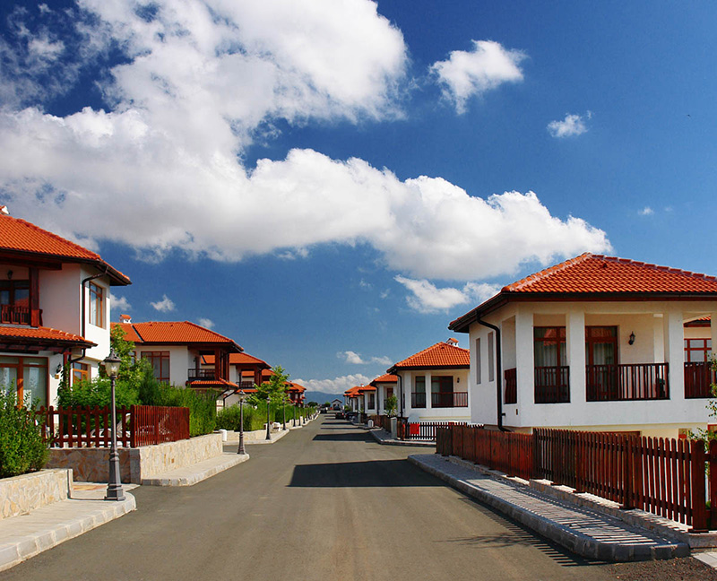

.jpg)

.jpg)


Чем интересна недвижимость в Болгарии?
Благодаря доступности по цене, болгарская недвижимость давно привлекает российских (и не только) покупателей. Невысокие цены, низкая плата за содержание, море, солнце и относительная близость к родине вызывают неподдельный интерес к выбору недвижимости именно в этой стране. Однако перед приобретением квартиры или дома следует внимательно изучить все «подводные камни», которые могут возникнуть при покупке.
В каком районе страны лучше покупать? Существует несколько основных районов Болгарии, которые традиционно притягивают к себе потенциальных покупателей.
1. Первое, что влечет сюда желающего купить недвижимость, — море. По данным статистики, до девяноста процентов покупателей стремятся приобрести недвижимость на побережье.
2. Вторыми по популярности считаются горные курорты.
3. На третьем месте находятся курорты с минеральными водами, стремительно набирающие популярность среди покупателей.
4. Четвертое приоритетное место занимает столица Болгарии София.
Недвижимость на побережье Черного моря
На побережье можно найти недвижимость на любой кошелек: от элитной и представительской до эконом-класса. Приобретая недвижимость на побережье, стоит учесть, что во многих небольших городах и курортных местах (например, известные Золотые пески, Солнечный берег и др.) жизнь замирает с окончанием сезона. Если планируется приезжать сюда лишь в сезонные летние месяцы на короткий срок, то беспокоиться не о чем.
Однако для проживания круглый год лучше выбрать город, где жизнь не затихает и в межсезонье. Такими местами в Болгарии в первую очередь являются Варна и Бургас и города поменьше — Созополь, Несебр, Поморие. Перед покупкой стоит обязательно обдумать этот момент. 
Недвижимость на зимних курортах
Приобретая недвижимость на горнолыжных курортах, можно не беспокоиться о ее качестве. По этому показателю болгарские курорты не только не уступят австрийским или французским, но даже существенно выиграют в цене. Во многие горнолыжные курорты активно вкладываются деньги, и развитие этих центров идет полным ходом. Например, одним из развивающихся достаточно активно городов является Банско.
Недвижимость на минеральных курортах
Курорты на минеральных водах позволяют приобрести не только хорошую недвижимость, но и предоставляют возможность постоянно поправлять свое здоровье. Грязи и минеральные источники — основа местной экономики и медицины. Лечению подвергается все: от артритов и радикулита до сложных заболеваний женского организма. При этом совершенно необязательно выходить из дома. В некоторых городках, например, в Велинграде или Сандански минеральная вода бежит из крана в ванной.
Недвижимость в Софии
В основном, Софию выбирают для постоянного места жительства. Для работы, для учебы, а также в качестве удобного места для поездок в другие страны Европы. Стоимость недвижимости в Софии равна стоимости недвижимости на побережье. Дорога от Софии до моря займет около 4-5 часов (трасса София — Бургас). Но София, т.к. это столица, имеет гораздо больше преимуществ именно городского характера: здесь больше парков, больше магазинов, много музеев, удобное метро и прочие прелести цивилизации. Также такие «мелочи», как хорошая вода из-под крана, гора Витоша и большое количество интересных мест недалеко от столицы, делают покупку недвижимости в Софии особенно интересной.
Первичный и вторичный рынок недвижимости в Болгарии
На вторичном рынке болгарской недвижимости можно найти очень выгодные варианты покупки квартир. Низкая цена обусловлена тем, что много недвижимости продают владельцы из других стран, взявшие в докризисный период кредиты на приобретение, но так и не сумевшие полностью расплатиться. Им нужны деньги для погашения кредитов. Поэтому вторичный рынок пестрит выгодными предложениями. Кроме того, квартиры в курортных местах продаются дешевле, т.к. это место не для постоянного жительства (т.е. зимой там живет очень мало людей). Например, на Солнечном берегу можно подыскать небольшую, но меблированную студию за восемнадцать — двадцать тысяч евро. Для сравнения: однокомнатная квартира в Варне или Бургасе на вторичном рынке будет стоить в районе 25-40 тысяч евро.
Первичный рынок не делает таких щедрых предложений, и поэтому цены здесь гораздо выше. Но вынужденные продавать дорого некоторые застройщики все же оставляют привлекательной свою недвижимость за счет того, что предлагают беспроцентную рассрочку. Некоторые компании, торгующие такой недвижимостью, могут предложить кредит на три года. Апартаменты без мебели, с одной спальней, с рассрочкой на два года, обойдутся примерно в 40 тысяч евро. Рассрочка без процентов. Источник:http://peopleandcountries.com